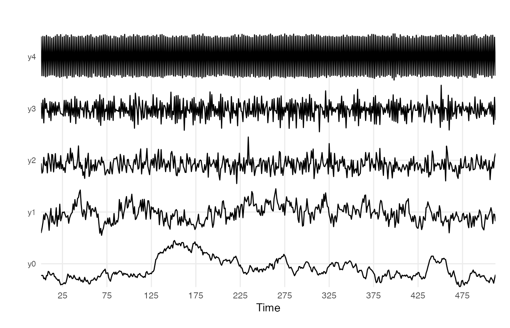
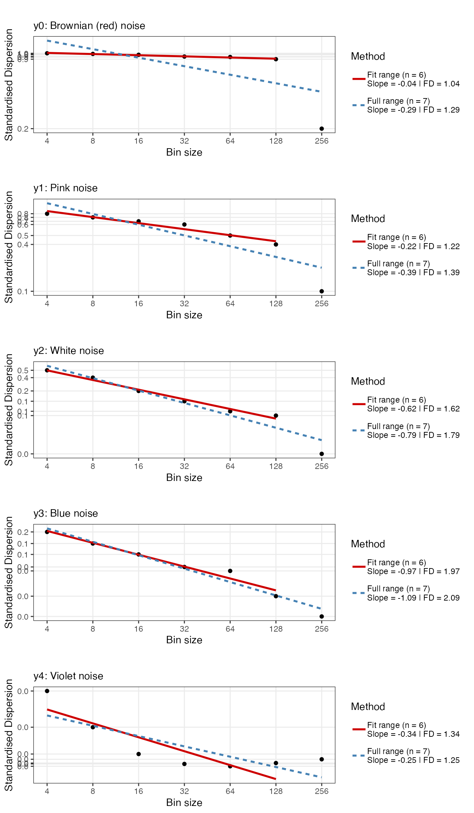
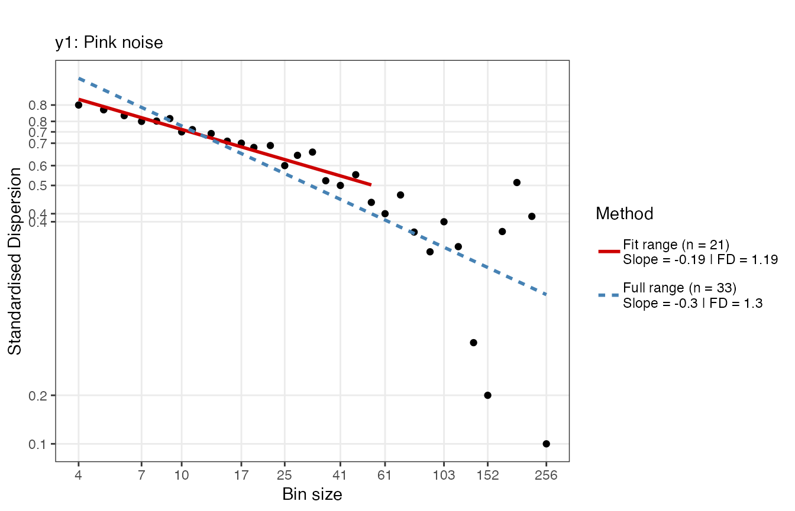
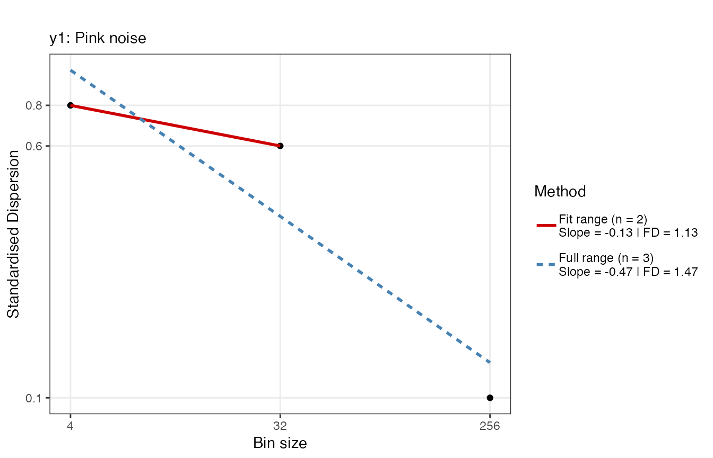
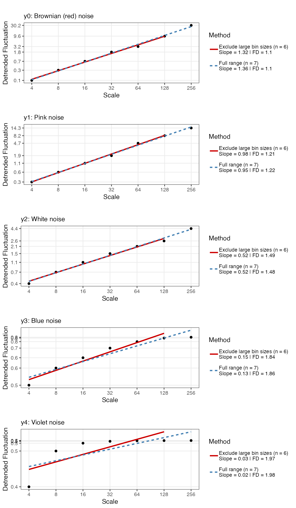
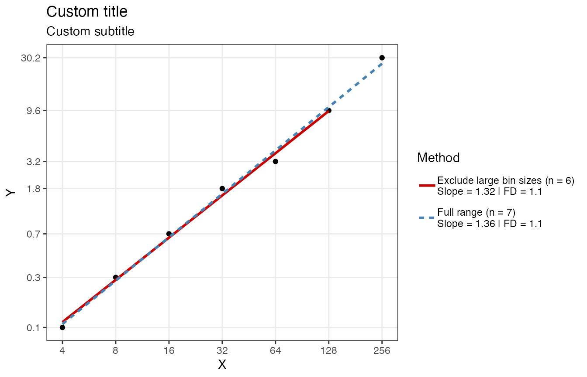
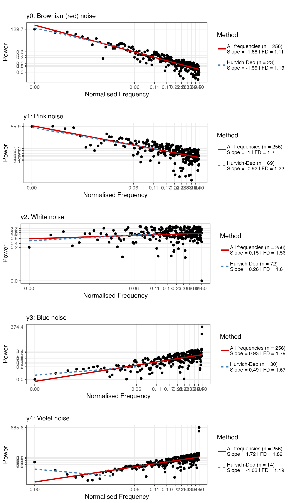
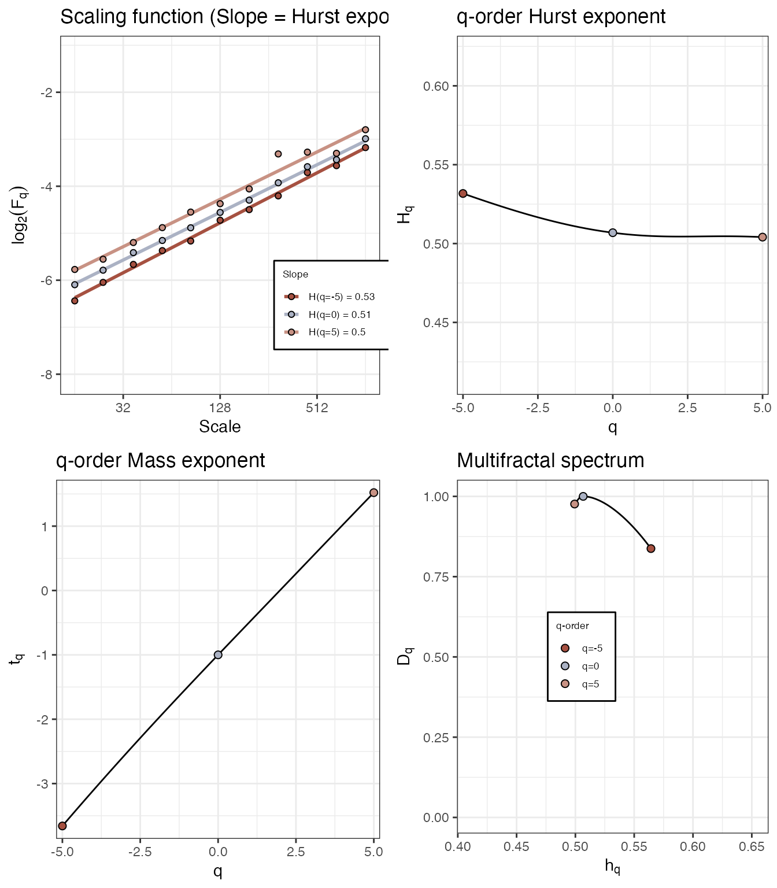
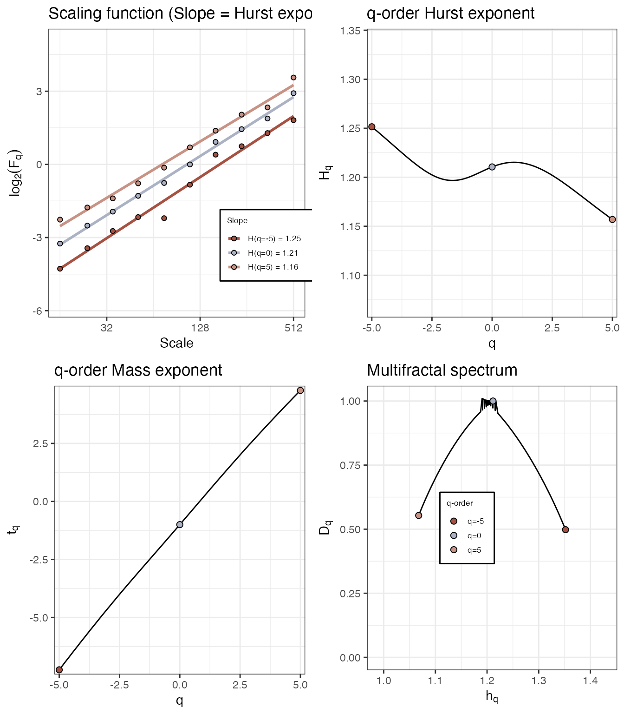

Quantifying Scaling Phenomena in Time Series
Fred Hasselman
2024-11-20
Source:vignettes/scalingphenomena.Rmd
scalingphenomena.RmdGlobal Scaling Phenomena
“If you have not found the 1/f spectrum, it is because you have not waited long enough. You have not looked at low enough frequencies.”
- Machlup (1981)
The family of fluctuation analyses all start with fd_
and most of them are based on quantifying a dependency of the magnitude
of fluctuations observed at different time scales.
The slope of time scale with fluctuation in log-log coordinates
represents the scaling exponent, which can be transformed into an
estimate of the Fractal Dimension. In casnet this
conversion is performed by applying the formula’s provided in (Hasselman
2013).

Let’s create some noise series:
library(casnet)
y0 <- noise_powerlaw(alpha = -2, N = 512)
y1 <- noise_powerlaw(alpha = -1, N = 512)
y2 <- noise_powerlaw(alpha = 0, N = 512)
y3 <- noise_powerlaw(alpha = 1, N = 512)
y4 <- noise_powerlaw(alpha = 2, N = 512)
plotTS_multi(data.frame(y0,y1,y2,y3,y4))
ts_list <- list(y0,y1,y2,y3,y4)
noiseNames <- c("y0: Brownian (red) noise", "y1: Pink noise", "y2: White noise", "y3: Blue noise" ,"y4: Violet noise")Standardised Dispersion Analysis (SDA)
In Standardised Dispersion Analysis, the time series is converted to z-scores (standardised) and the way the average standard deviation (SD) calculated in bins of a particular size scales with the bin size should be an indication of the presence of power-laws. That is, if the bins get larger and the variability decreases, there probably is no scaling relation. If the SD systematically increases either with larger bin sizes, or, in reverse, this means the fluctuations depend on the size of the bins, the size of the measurement stick.
library(cowplot)
sdaPlots <- plyr::llply(seq_along(ts_list), function(t){
fd_sda(ts_list[[t]],silent = TRUE, returnPlot = TRUE, noTitle = TRUE,
tsName = noiseNames[t])$plot
})
cowplot::plot_grid(plotlist = sdaPlots, ncol = 1)
To increase the resolution of the bins adjust the argument
scaleResolution and/or the values of scaleMin
and scaleMax, OR the value dataMin.
At a resolution of 32 there appear to be 2 scaling
regions
t <- 2 # Pink noise
fd_sda(ts_list[[t]], silent = TRUE, scaleResolution = 32, noTitle = TRUE, tsName = noiseNames[t], doPlot = TRUE)
Below the argument dataMin, which defaults to
4, is used to adjust the fit range.
fd_sda(ts_list[[t]], silent = TRUE, scaleResolution = 32, dataMin = 10, noTitle = TRUE, tsName = noiseNames[t], doPlot = TRUE)
This is probably not a good idea…
fd_sda(ts_list[[t]], silent = TRUE, scaleResolution = 2, noTitle = TRUE, tsName = noiseNames[t], doPlot = TRUE)
Detrended Fluctuation Analysis (DFA)
The procedure for Detrended Fluctuation Analysis is similar to SDA,
except that within each bin, the signal is first detrended, what remains
is then considered the residual variance (see
e.g., Kantelhardt et al.
2002). The logic is the same, the way the average residual
variance scales with the bin size should be an indication of the
presence of power-laws. There are many different versions of DFA, one
can choose to detrend polynomials of a higher order, or even detrend
using the best fitting model, which is decided for each bin
individually. See the manual pages of fd_dfa() for
details.
dfaPlots <- plyr::llply(seq_along(ts_list), function(t){
fd_dfa(ts_list[[t]],silent = TRUE, returnPlot = TRUE, noTitle = TRUE,
tsName = noiseNames[t])$plot
})
cowplot::plot_grid(plotlist = dfaPlots, ncol = 1)
For more customization options, use function
plotFD_loglog(), make sure to return the Power Law in the
output by setting returnPLAW = TRUE. You could use
plotFD_loglog() or create your own figure based on the data
in the PLAW field of the output.
dfa0a <- fd_dfa(y0, silent = TRUE, returnPLAW = TRUE)
plotFD_loglog(dfa0a, title = "Custom title", subtitle = "Custom subtitle", xlabel = "X", ylabel = "Y")
Power Spectral Density Slope (PSD slope)
psd0 <- fd_psd(y0, silent = TRUE, returnPlot = TRUE, noTitle = TRUE, tsName = "y0: Brownian (red) noise")
psd1 <- fd_psd(y1, silent = TRUE, returnPlot = TRUE, noTitle = TRUE, tsName = "y1: Pink noise")
psd2 <- fd_psd(y2, silent = TRUE, returnPlot = TRUE, noTitle = TRUE, tsName = "y2: White noise")
psd3 <- fd_psd(y3, silent = TRUE, returnPlot = TRUE, noTitle = TRUE, tsName = "y3: Blue noise")
psd4 <- fd_psd(y4, silent = TRUE, returnPlot = TRUE, noTitle = TRUE, tsName = "y4: Violet noise")
cowplot::plot_grid(plotlist = list(psd0$plot,psd1$plot,psd2$plot,psd3$plot,psd4$plot), ncol = 1)
Windowed Analysis: Brownian noise to white noise
library(tidyverse)
set.seed(1234)
y <- rnorm(1024)
y[513:1024] <- cumsum(y[513:1024])
id <- ts_windower(y = y, win = 256, step = 1, alignment = "r")
DFAseries <- plyr::ldply(id, function(w){
fd <- fd_dfa(y[w], silent = TRUE)
return(fd$fitRange$FD)
})
df_FD <- data.frame(time = 1:1024, y = y, FD = c(rep(NA,255), DFAseries$`DFAout$PLAW$size.log2[fitRange]`)) %>%
pivot_longer(cols = 2:3, names_to = "Variable", values_to = "Value")
df_FD$Variable <- relevel(factor(df_FD$Variable), ref = "y")
ggplot(df_FD, aes(x = time, y = Value)) +
geom_line() +
geom_hline(data = df_FD %>% filter(Variable == "FD"), aes(yintercept = c(1.1)), colour = "brown") +
geom_hline(data = df_FD %>% filter(Variable == "FD"), aes(yintercept = c(1.5)), colour = "grey") +
geom_vline(xintercept = 512, linetype = 2) +
facet_grid(Variable~., scales = "free_y") +
theme_bw()Local Scaling Phenomena: Multi fractal DFA
Function fd_mfdfa() should reproduce results similar to
the Matlab code provided by (Ihlen 2012).
Mono fractal
set.seed(33)
# White noise
fd_mfdfa(noise_powerlaw(alpha = 0, N=4096), doPlot = TRUE)>
>
> (mf)dfa: Sample rate was set to 1.
>
> ~~~o~~o~~casnet~~o~~o~~~
>
> Multifractal Detrended FLuctuation Analysis
>
> Spec_AUC Spec_Width Spec_CVplus Spec_CVmin Spec_CVtot Spec_CVasymm
> 1 0.0615 0.0649 0.00597 0.0524 0.0435 -0.795
>
>
> ~~~o~~o~~casnet~~o~~o~~~
# Pink noise
fd_mfdfa(noise_powerlaw(alpha = -1, N=4096), doPlot = TRUE)>
>
> (mf)dfa: Sample rate was set to 1.>
> ~~~o~~o~~casnet~~o~~o~~~
>
> Multifractal Detrended FLuctuation Analysis
>
> Spec_AUC Spec_Width Spec_CVplus Spec_CVmin Spec_CVtot Spec_CVasymm
> 1 0.202 0.22 0.0868 0.0883 0.087 -0.00877
>
>
> ~~~o~~o~~casnet~~o~~o~~~‘Multi’ fractal
Function fd_mfdfa()
# 'multi' fractal
N <- 2048
y <- rowSums(data.frame(elascer(noise_powerlaw(N=N, alpha = -2)), elascer(noise_powerlaw(N=N, alpha = -.5))*c(rep(.2,512),rep(.5,512),rep(.7,512),rep(1,512))))
fd_mfdfa(y=y, doPlot = TRUE)>
>
> (mf)dfa: Sample rate was set to 1.
>
> ~~~o~~o~~casnet~~o~~o~~~
>
> Multifractal Detrended FLuctuation Analysis
>
> Spec_AUC Spec_Width Spec_CVplus Spec_CVmin Spec_CVtot Spec_CVasymm
> 1 0.226 0.284 0.176 0.202 0.189 -0.0696
>
>
> ~~~o~~o~~casnet~~o~~o~~~For more information on how to use the output from multi-fractal DFA in you studies see e.g. (Kelty-Stephen et al. 2013; Hasselman 2015).